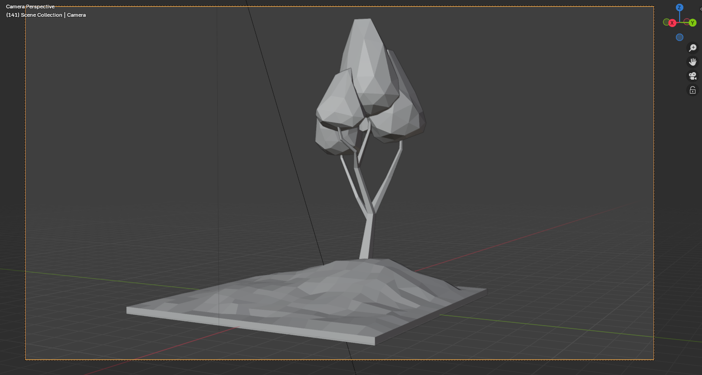
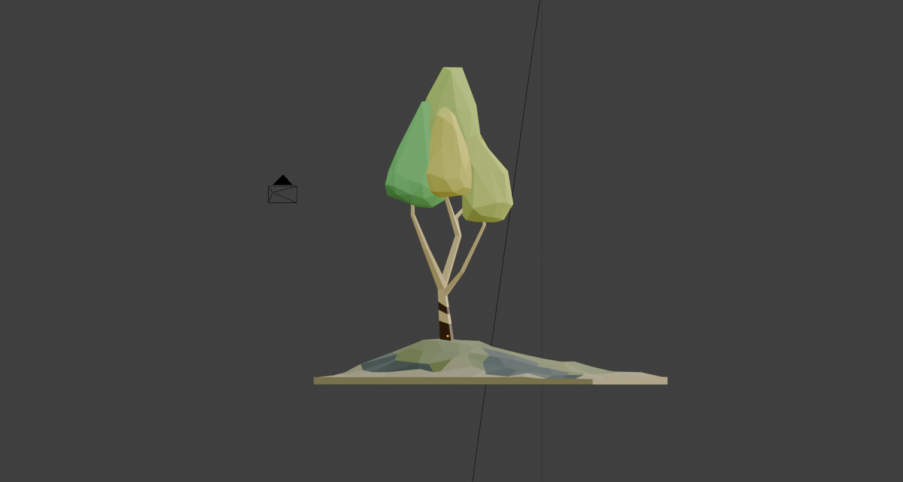
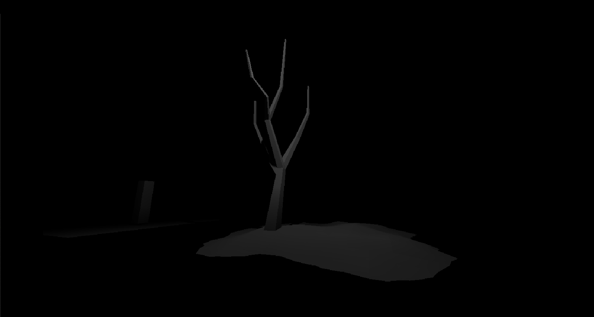
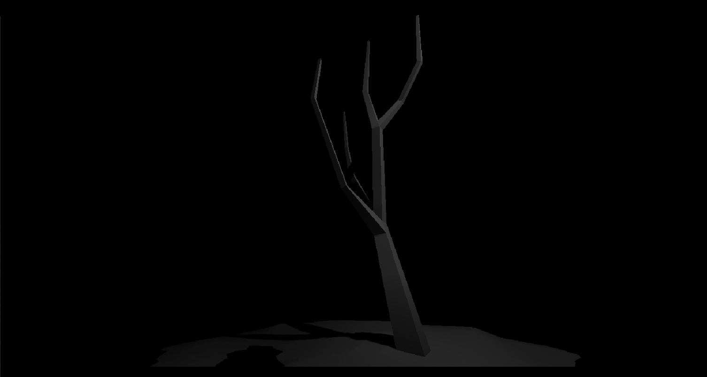

Over the past few days, I've dove into a small personal project combining one of my favorite game engines
with a modelling tool, Godot Engine and Blender. It started out as a simple excercise to get more comfortable
with some of Blender's general layout, tools, and modifiers but eventually evolved into something more visually
interesting and enjoyable for me to continue to explore.
The Idea
I wanted to create a small tile or diorama featuring a single "zone" like space with a tree and some uneaven
terrain. The goal wasn't to create a realistic scenario but rather about understanding how I could tinker with
a small model to improve my understanding on shapes, lighting, and atmosphere as i'd been meaning to familiarise
myself with blenders tools and modifiers and this seemed like the perfect way to go about it.
I started by experimenting with primitive modifiers and meshes, particularly a plane and subdivision surface
tools which allowed me to refine the plane, adding organic imperfections. Similarly, through using the numpad
camera angles I was able to sculpt a basic stump for my tree which I could extrude upon to create more branches.


Moving to Godot: Shadow & Volumetric Light Tests
After finishing the model, I exported it into Godot to start playing with the lighting. I also imported a few
bare models (utilising only the branch meshes from my tree asset) to test how shadows, fog density, and omni lights
could be tweaked to set a mood.
I plan to expand on this idea, maybe make more densly populated zones with different fauna. In a blender aspect
to further experiment and tinker with models and design elements, and in a Godots aspect to gamify the models into
their own little exploration.


Post 7/6/2025
This tile scene is my first personal asset combining sculpting, modifiers, and engine lighting.
I used Godot’s volumetric tools and Blender’s sculpt brushes to experiment with light, shadow, and form. If you'd like to take a
closer look, I've provided the .blend file which can be downloaded below;
Download .blend